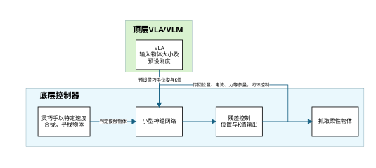
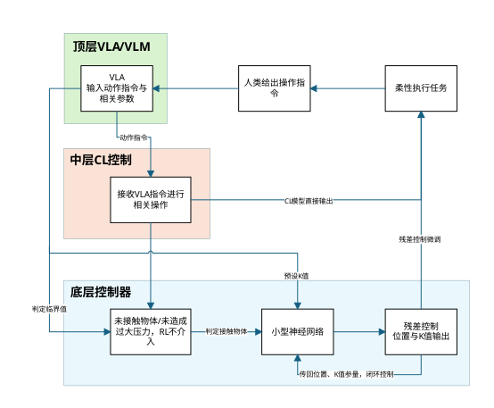
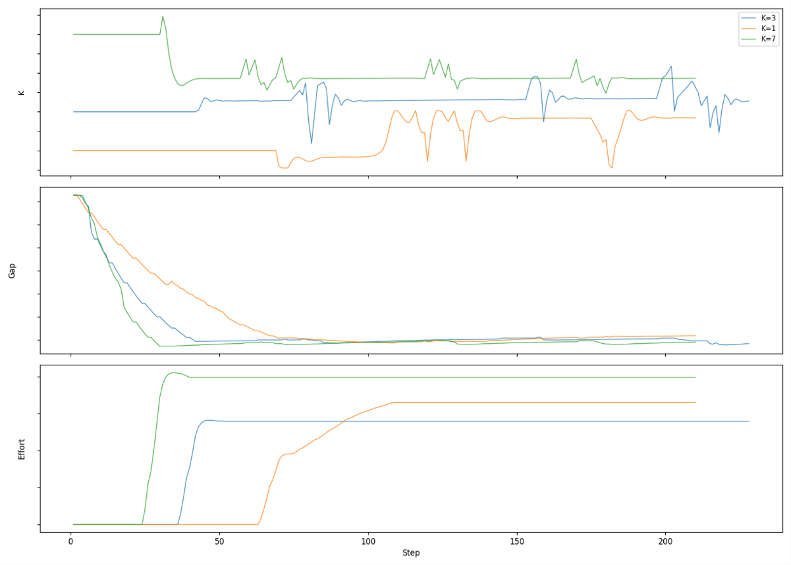
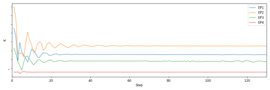
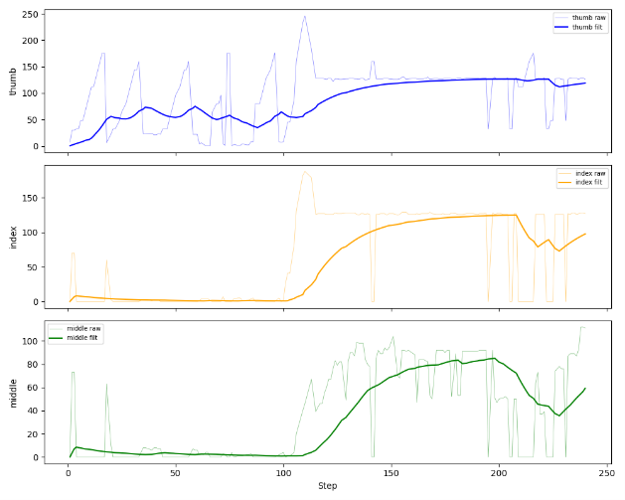
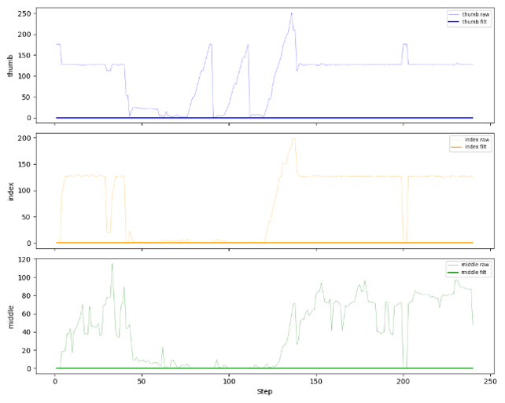
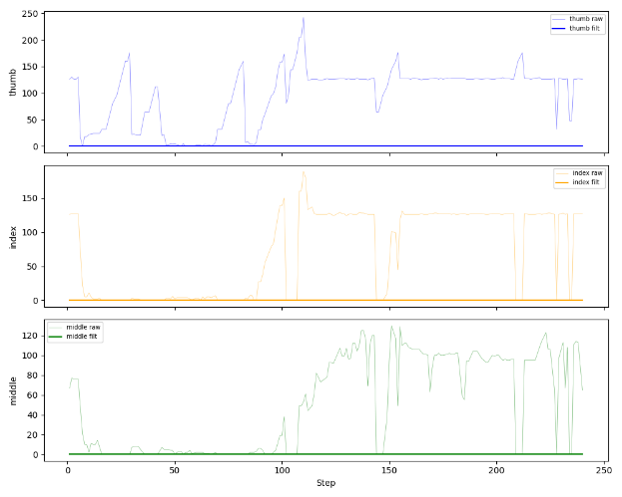
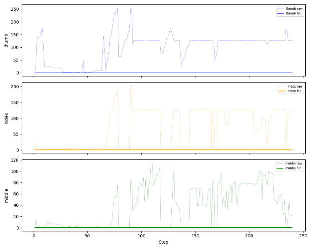

在低成本、大噪声的欠驱动硬件上，构建分层阻抗控制架构， 以虚拟弹簧力替代真实力传感器，实现软硬物体的自适应柔性抓取。
在具身智能灵巧操作的研究中，柔性抓取高度依赖高精度六维力/力矩传感器与昂贵的直驱电机。 然而，在推动技术平民化落地的过程中，必须面对大噪声、欠驱动硬件带来的挑战。
| # | 痛点 | 表现 |
|---|---|---|
| 1 | 极低传感器信噪比 | 电流反馈与位置反馈波动极大，频繁出现大幅跳变或示数归零，无法提供平滑力觉参考 |
| 2 | 非线性机械阻力 | 夹爪闭合至极小开口时，内部机械摩擦力呈非线性急剧上升，严重干扰力/电流反馈 |
| 3 | 指尖传感器灵敏度低 | 面对软体物体，在很大抓取区间内示数恒为 0；触觉阵列响应阈值过高，小形变无法触发 |
| 4 | 欠驱动特性 | 单指仅 1 自由度（拇指 2），无法通过多关节协同实现高精度自适应抓取 |
试图用单一端到端强化学习网络去拟合所有物理噪声，是低效且危险的。
采用「宏观空间控制 + 微观物理反射」的分层设计， 将规划与力控解耦，每层只处理自己擅长的问题。

VLA/VLM 顶层预测物体大小与硬度 → Phase 1 程序合拢靠近 → 接触检测触发 → Phase 2 SAC 小网络残差微调 → UDP/ROS2/CAN 驱动拇指+食指

VLA/VLM 输入动作指令与参数 → Phase 1 伪宏观轨迹动态合拢 → 接触检测触发 → Phase 2 VecEnv N指独立SAC推理 → 合并GRASP指令驱动2-5指
| 维度 | V1.0 | V2.0 |
|---|---|---|
| 架构 | 单环境 gym.Env | VecEnv 伪并行 3–5 环境 |
| 手指数 | 拇指 + 食指 (2指) | 2–5 指可配置 |
| 观测空间 | 5维 × 5帧堆叠 位置、滤波电流、Gap、K |
2维 × 5帧堆叠（每指） 位置、K (极简) |
| 动作空间 | 3维：双指位置残差 + K值残差 | 2维/指：位置残差 (非对称，仅退不进) + K值残差 |
| 接触检测 | EMA滤波 + 固定基线 电流上升值 > 阈值 |
简单阈值判定 跳过启动噪声 · 拇指间接推断 |
| 奖励函数 | 高斯奖励(追踪目标虚拟力) + 形变税(惩罚过度挤压) + 摸鱼惩罚 | 高斯奖励(追踪目标虚拟力) + 形变税(惩罚过度挤压) + 悬空归零 · 动作平滑 |
| 传感器使用 | EMA电流 + 位置 + K | 仅位置 + K（彻底舍弃电流/触觉） |
| 数据效率 | 1× | N指倍（3指 ≈ 3倍） |
彻底放弃高噪声的电流/力传感器，改用虚拟力作为奖励信号。 虚拟力定义为阻抗系数 K 与手指间距偏差的乘积（F = K·ΔX）， 通过电机编码器的高精度位置误差间接实现力觉闭环。 网络无需猜测物体软硬，只追踪恒定的虚拟弹簧力。
奖励函数由四部分构成：
面对柔软物体：模型主动降低对力的要求以保证形变量最小 — 无需预设物体类别，一个奖励函数自适应所有材质。
输入 5 帧历史物理状态，让 SAC 网络隐式学习形变的时间导数， 在无标签情况下获得材质辨识能力。（海绵 vs 硬块 vs 杯套 vs 西瓜果肉）
所有手指共享同一 SAC 网络，状态空间仅 2 维（位置 + K）， 使模型天然具备跨手指泛化能力 — 三指训练后可直接迁移至二指、五指抓取。
位置残差范围 [-1.0, 0.1]：赋予模型极大的退让权限以保护硬件， 同时严格限制主动挤压 — 网络学会在动态合拢基线上精准输出刹车残差。
直接让 SAC 从零学习全套抓取策略。观测 Dict (触觉40维+运动学20维)，
动作含目标位置和 K 值。
失败原因：奖励信号完全依赖电流传感器，噪声巨大，
RL 无法建立稳定状态-奖励映射。纯探索式学习在真实硬件上效率极低。
引入 Phase 1/2 分层架构，尝试实时估计物体刚度 (env_stiffness = Δeffort / Δsqueeze)
以动态调整安全挤压上限。
失败原因：传感器精度过低，无法区分海绵和硬方块，
EMA 滤波后的刚度值几乎无法收敛。动态上限频繁误判，奖励信号混乱。
彻底放弃刚度估计，改用虚拟力替代真实力传感器。观测 5 维 × 5 帧堆叠 = 25 维。
脏数据多层过滤（位置归零、电流归零、Gap异常、电流尖峰）。
结果：60,000 步即可收敛。虚拟力不依赖传感器精度，
形变税让模型天然倾向最小化挤压。
从双指扩展至全手。共享模型 + 极简观测 (2维/指) + 非对称动作空间。 三指训练，数据效率 3 倍提升。动态伪宏观轨迹注入使模型学会在合拢中刹车。
双指（拇指+食指）分层力控 · 材质自适应
针对不同的预设 K 值，模型能够主动通过残差输出 让真实 K 值稳定在期望的目标值附近。不同 K 值条件下曲线均收敛于稳定的 Gap 值，K 值越小收敛越慢。

不同预设 K 值下的 Gap / 滤波后电流 / 实际 K 值收敛曲线
多指 VecEnv · 共享模型 · 跨手指迁移
针对不同的预设 K 值，模型具有动态调节能力，在短暂振荡后收敛至稳定值。 与 V1 相比，更紧凑的观测空间（仅位置+K）使收敛路径更加平滑。

不同预设 K 值下的 K 值与 Gap 收敛曲线
对 LinkerHand L6 各传感器进行了系统标定，为模型设计提供数据支撑：
| 传感器 | 结论 | 模型中的使用 |
|---|---|---|
| 手指位置 | ✅ 最稳定准确，噪声小 | 唯一训练数据源 |
| 电机电流 |
⚠️ 食指/中指较稳定 · 拇指噪声极大 拇指空载噪声方差约为食指的十余倍，数据质量差异显著 |
仅用于接触检测 · 不参与状态空间 |
| 触觉传感器 | ❌ 灵敏度阈值过高，软物体形变区间内示数恒为0 | 彻底舍弃 |
| 触觉阵列 | ❌ 硬物体无形变无法利用 · 力传感器多数角度不触发 | 彻底舍弃 |
以下为拇指、食指、中指在空载、抓取硬物、抓取软物时的电流变化曲线：


拇指噪声极大，食指/中指在接触后电流变化较直观且稳定。


软物体形变范围内电流变化幅度更小，进一步验证仅依赖电流进行精细力控不可行 — 应降级为接触检测。
多层脏数据过滤，确保训练信号的可靠性：
| 过滤条件 | 含义 | 版本 |
|---|---|---|
| 位置值为零 | UDP 丢包 | V1 |
| 电流值为零 | 传感器故障 | V1 |
| Gap 值异常偏低 | 物理不可能值 (UDP 混串) | V1 |
| 原始电流与滤波值偏差过大 | 电流尖峰 | V1 |
| 位置值异常偏低 | 传感器读取异常 | V2 |
| 原始电流尖峰 | 中值滤波去噪 | V2 |
拇指侧向自由度完全锁死，阻抗残差全集中在法向挤压。 极重/极滑物体发生相对滑动时，当前补偿机制无法做出正确反馈。
剥离触觉阵列后，无法感知接触面实际受力分布。 尖锐物体可能局部压强过大，存在破坏局部材质风险。
仅支持柔性抓取模式。对于紧握/部分紧握部分柔性等混合控制场景， 需顶层 VLA/VLM 进一步协调。
极小开口处传动死区导致电流信噪比灾难性下降。V1 通过最小合拢阈值规避， 牺牲了极小物体的抓取能力。
将力控模型真实部署至 IL 模型（模仿学习）控制的灵巧手，观察实机效果。 根据具体任务特点定制不同模型变体。
训练 VLM/VLA 理解物体软硬，指导接触识别阈值设定。 大模型宏观决策 + 小网络微观执行：弥补大模型物理交互的缺失。
补充消融实验与对比实验，处理分析数据， 争取冲刺相关国际会议或期刊。
将相同方法推广至机械臂，使整条运动链具备柔性控制能力， 支撑更复杂、更精确的操作任务。